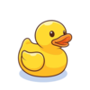

Tienda de Rastros
(Costo: 10 monedas)



(Costo: 10 monedas)
Feliz San Valentín mi vida!!! Estoy seguro que hoy lo hemos
pasado genial, al fin y al cabo cualquier plan a tu lado
es un
buen plan, espero que no te haya fastidiado que no haya
sido un,
juego mi regalo quería hacer algo más
íntimo, aunque aquí hay
algo parecido.
En esta página vas a poder atrapar a dases salvajes
y a cambio
puedes personalizarte un par de cosas si
vas toqueteando lo verás.
Te he dejado también unos tiktoks
por si necesitas tu dosis mientras estás aquí y
al final del todo tienes un reproductor de
canciones las cuales
me recuerdan a ti.
(Te recomiendo que bajes el volumen)
Espero que te guste❤️
Y lo siento por el textaco me habria gustado
escribir mas pero sino te me dormias.
Dale click cuando quieras para ver la página❤️

Todo empezó un día que ni siquiera recuerdo bien, cuando Natalia me dijo de ir a casa de alguien llamado Juls. Iluso de mí, pensé que era un chico por el rapero Juls y que solo era un mote.
Al llegar, me presentaron a un gato naranja que no paraba de maullar. Con lo tímido que soy, no saludé a todo el mundo… entre ellos, a ti. Recuerdo verte a través del cristal del salón sin saber que eras la dueña de la casa. Posiblemente me fui sin siquiera saber quién era Juls.
Un tiempo después, nos cruzamos algunos días cuando quedábamos en el callejón. Recuerdo que me llamaste la atención más de una vez, pero en ese momento lo veía algo lejano, fuera de mi alcance.
Pasaron unas semanas y una tarde estábamos en la terraza de Natalia, con Gorka y contigo. Creo que fue una de nuestras primeras conversaciones más íntimas, ya que Natalia no estaba. Recuerdo cómo hablaste del niño al que me niego a nombrar aquí, de lo mal que te trató, de las cosas que nunca debiste soportar. Estuviste un buen rato desahogándote, mientras nosotros te escuchábamos. Pensé: "Ojalá esta chica tan guapa y dulce me diera una oportunidad para amarla como merece."
Con el tiempo, empezamos a vernos más seguido, ya fuera en casa de Ángel o de Silfu. Hasta que un día, estando en casa de Silfu, nos sorprendió la lluvia y no sabíamos dónde ir. Fue cuando decidimos ir a casa de Isma…
Y pasó LA TERTULIA, o como prefiero llamarlo, LA ENCERRONA de la cocina. Fue uno de los momentos más vergonzosos de mi vida, pero al final nos sirvió para reírnos. Cuando me enteré de todo, sentí que el mundo se me caía encima. Lo último que quería era hacerte daño, solo quería hacerte feliz. Aun así, conseguimos que todo saliera bien.
Nunca olvidaré cuando te cogí de la pierna ese día, jugando al parchís en el parque. Lo nervioso que estaba no tiene sentido.
Desde aquel primer día pasó todo esto sin que yo fuera consciente de que tenía delante a la persona con la que quiero compartir mi vida. Sin saber que lloraría por casi perder un anillo de 1€ con tu inicial, sin imaginar que me cruzaría con alguien tan brillante. Y digo "brillante" porque iluminas a tu alrededor con felicidad y cariño, con ese humor que haría reír hasta en un funeral.
A tu lado lo tengo todo: cariño, mimos, risas, besos, motivación (menos
en el Rocket)...
A tu lado todo brilla, como si fueras un agujero negro supermasivo
rodeado de estrellas.
Todo brilla, tal y como lo haces tú. ❤️
Y encima, siendo extremadamente guapa, mona y sexy.
Gracias por iluminar mi vida, nunca antes brilló con tanta intensidad. ❤️


(Costo: 5 monedas)